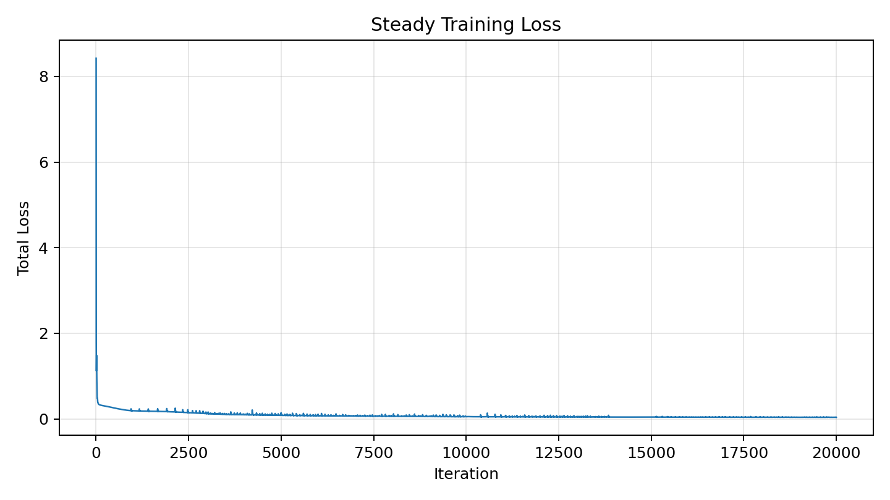
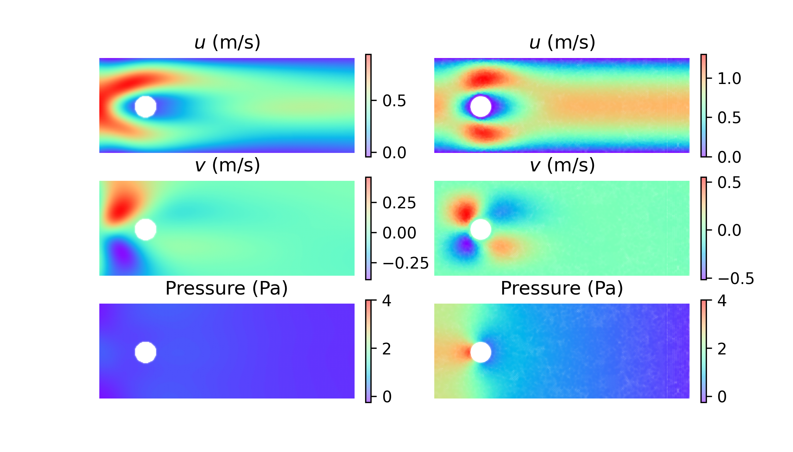
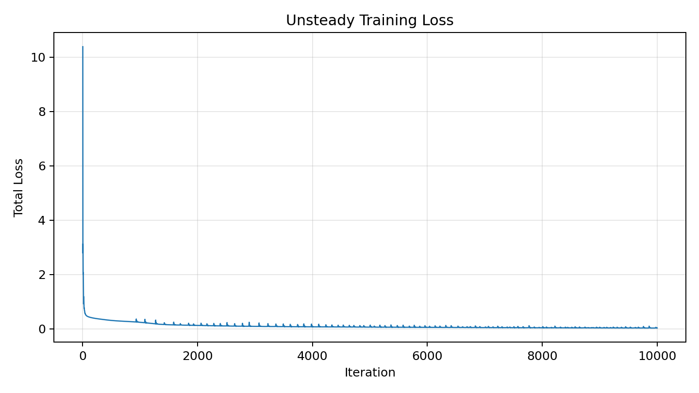
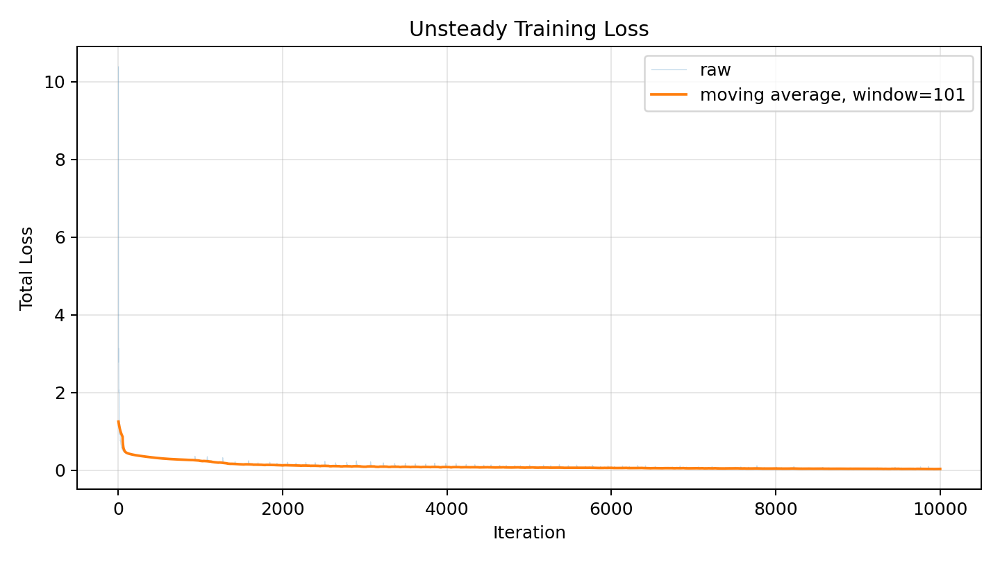
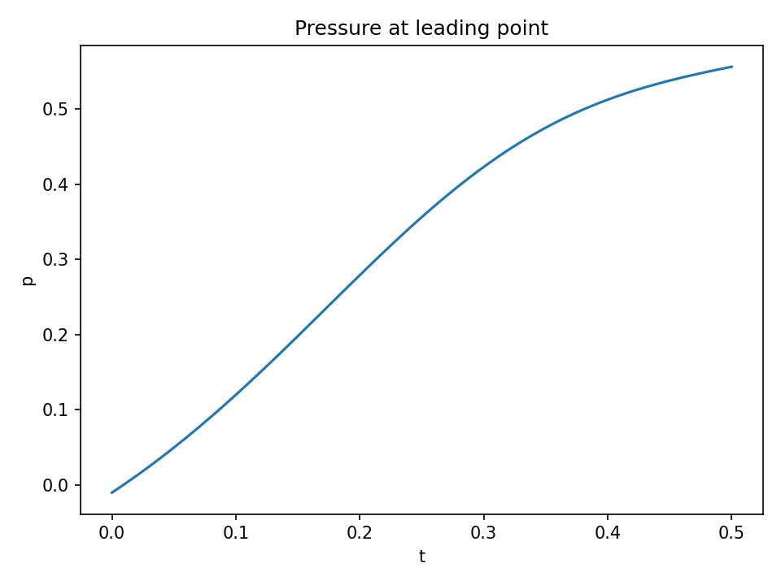
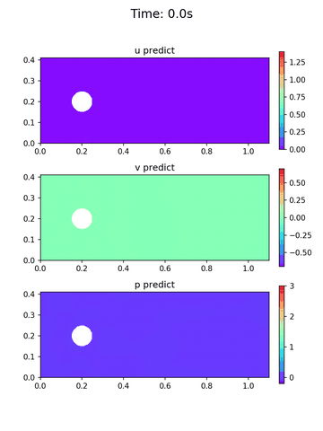

下面列了常用術語的白話解釋，邊讀邊查就好——全文都保留英文原文。
| 術語 | 縮寫 | 說明 |
|---|---|---|
| 物理背景 | ||
| Navier-Stokes Equations | N-S | 描述不可壓縮黏性流體運動的偏微分方程組，是本專案所有物理約束的來源。 |
| Reynolds Number | Re | 無因次數，描述慣性力與黏性力的比值。Re = 100 時，圓柱後方產生週期性 Kármán vortex street。 |
| Kármán Vortex Street | 流體繞過圓柱後方出現的交替脫落漩渦結構，是本專案模擬的物理現象。 | |
| Vorticity | 描述流體旋轉強度的物理量（∂v/∂x − ∂u/∂y），視覺化時用來呈現渦街結構。 | |
| Computational Fluid Dynamics | CFD | 用數值方法（有限元素、有限體積）在 mesh 上求解流體方程式的傳統工程工具（如 Fluent、OpenFOAM）。 |
| 神經網路基礎 | ||
| Multilayer Perceptron | MLP | 最基本的全連接前饋神經網路（feedforward neural network），是本專案基線架構。 |
| Loss Function | 訓練時用來衡量「網路輸出有多差」的數值目標。PINN 的 loss function 由三部分組成：PDE residual、boundary condition error、initial condition error。 | |
| Activation Function | 神經元內部的非線性函數（如 tanh、ReLU、sin）。選擇不當會影響 PINN 對高頻特徵的捕捉能力。 | |
| Residual Connection | 跳層連結（skip connection），讓梯度可以直接回傳到較淺的層，防止 vanishing gradient。 | |
| Vanishing Gradient | 深層網路訓練時梯度越傳越小，導致淺層的權重幾乎無法更新的現象。層數超過 8 層的 tanh MLP 特別容易發生。 | |
| PINN 核心 | ||
| Physics-Informed Neural Network | PINN | 將物理方程式（PDE）嵌入 loss function 的神經網路，不需要標記量測資料即可求解流場。 |
| Partial Differential Equation | PDE | 包含多個偏導數的方程式。Navier-Stokes 就是一組 PDE，PINN 的 loss function 就是 PDE 的殘差（residual）。 |
| Collocation Points | PINN 在訓練時用來評估 PDE residual 的散佈座標點 (x, y, t)，取代 CFD 的 mesh 格子。 | |
| Residual | PDE 方程式在某個點上「未被滿足的程度」。Residual 越接近零，代表網路在該點越符合物理。 | |
| Forward Problem | 給定 PDE 和所有物理參數（如黏度 μ），求解流場（u, v, p）。這是基線唯一能做的任務。 | |
| Inverse Problem | 給定少量流場量測，同時重建完整流場並反推未知物理參數（如黏度 μ）。PINN 可以自然支援。 | |
| 本專案採用的技術 | ||
| Fourier Feature Encoding | 在輸入進入 MLP 前，先用正弦/餘弦函數把座標映射到高維空間，讓網路能學習高頻函數。 | |
| Residual-Based Attention | RBA | 根據各個 collocation point 的 PDE residual 大小，自動分配 loss 權重，取代手動調整的固定係數。 |
| Causal Training | 強制 PINN 優先把早期時間步（小 t）學好，再挑戰後期時間步，反映物理因果性（causality）。 | |
| Residual-based Adaptive Distribution | RAD | 自適應 collocation point 採樣策略：在 PDE residual 最大的區域自動加密取樣點。 |
| Latin Hypercube Sampling | LHS | 一種均勻覆蓋多維參數空間的隨機採樣方法，是本專案基線的 collocation point 生成方式。 |
| Ablation Study | 系統性地移除或替換模型中的某個組件，以量化該組件對整體性能的貢獻。 | |
想像你要預測水流繞過圓柱後的樣子。傳統 CFD（如 Fluent、OpenFOAM）的做法是把整個空間切成幾十萬個格子（mesh）， 再在每個格子上求解 Navier-Stokes equations。這樣做很準，但要花幾小時到幾天，還需要有人手動建網格。
PINN 不用 mesh。我們改用一個神經網路，讓它學會「任意座標 (x, y, t) 對應的速度 (u, v) 和壓力 p」。 訓練時的 loss function 直接就是 PDE 方程式的殘差——網路不是在 fit 資料，是在滿足物理定律。 訓練點只是座標，不需要任何量測標記。
我們模擬的是二維不可壓縮層流繞圓柱，Reynolds number Re = 100。 在這個條件下，圓柱後方會週期性產生交替脫落的漩渦，形成 Kármán vortex street。 Schäfer-Turek 1996 有這個問題的公開 reference 數值（Cd、Cl、Strouhal number），我們的成果可以直接對比。
每個格子存一個方程式 → 巨大線性系統 → 需要專業網格工程師
輸入 (x, y, t)，Loss = PDE 殘差 → 不需要網格，也不需要量測標記
Navier-Stokes 說：速度場和壓力場在每個點都必須滿足質量和動量守恆。 PINN 把這件事翻譯成一個可微分的 loss term，和 boundary/initial condition 的誤差一起最小化。 網路找到一個函數 (x,y,t)→(u,v,p)，讓幾萬個 collocation points 上的 PDE residual 幾乎歸零——這就是整個方法的核心。
Repo 裡現有的 Phase 1 程式碼可以跑、可以出圖，是個不錯的起點。 但如果要在 Schäfer-Turek 上拿到可信的數字，或在 Demo Day 拿出有說服力的比較， 以下四個問題繞不過去。
使用 2018 年的純 tanh MLP，沒有 residual connections、沒有 adaptive activation functions。 深度超過 8 層後發生 vanishing gradient，精度無法進一步提升。
PDE residual、boundary condition、initial condition 三項 loss 的權重（目前為 2.0、5.0 等） 是手動調出來的，換一個問題就要重調，沒有理論依據。
目前用 Latin Hypercube Sampling (LHS) 隨機採樣，再人工在圓柱附近加密一個矩形區域。 wake 區域採樣不足，PDE residual 偏高，但訓練資源浪費在流場均勻區。
基線只能「給定 PDE + 物理參數 → 求解流場」。 無法做 inverse problem：給定少量量測點，反推未知物理參數（如黏度 ν）。
四條 Workstream 各自對應一個弱點，彼此獨立開發，Day 7 合併成一個模型。 每條由一位隊員主導，開發期間不需要等其他人。
一句話：把過時的 tanh MLP 換成 PirateNet 的 adaptive residual blocks + Fourier Feature Encoding。
為什麼有意義？ 普通深層 MLP 訓練 PINN 時，靠近圓柱表面的速度梯度變化非常劇烈， 平滑的 activation function 難以捕捉這些高頻特徵。PirateNet 在輸入端先做 Fourier Feature Encoding （Tancik et al., 2020），讓網路「看得見」高頻變化；residual connections 則讓梯度在深層網路中暢通無阻，解決 vanishing gradient。
一句話：用 RBA 自動調整 loss 權重，用 causal training 讓網路先學好早期時間步再挑戰後期。
為什麼有意義？ Kármán vortex street 是一個時間演化現象：t=0 的 initial condition 決定了 t=1 的流場，t=1 又決定了 t=2。 如果強迫網路同時學好所有時間步，它往往會把所有時間的 vorticity 「平均」成一個靜止的圓形， Kármán vortex street 特徵消失。Causal training 解決這個問題；RBA 則自動找出哪些 collocation points 的 PDE residual 最大並加重 loss 懲罰。
一句話：讓網路自己決定把 collocation points 放在哪裡——PDE residual 最大的地方自動獲得更多採樣。
為什麼有意義？ 手動在圓柱附近畫加密框，是因為我們已經知道哪裡難——這在真實問題裡根本做不到。 RAD 的邏輯是：哪裡 PDE residual 大，就在哪裡多放點。每隔幾百個 iteration 重新採樣一次， wake 區域自然吸引到更多 collocation points，上游均勻區自然稀疏——不需要任何人工介入。
一句話：給 10 個帶雜訊的速度量測點，讓 PINN 重建完整流場，並反推出未知的流體黏度 μ。
為什麼有意義？ 這是整個 Demo 最「讓觀眾眼睛一亮」的部分。傳統 data-driven 模型（如純 CNN） 若想做 inverse problem，需要大量已知黏度的 labeled training samples。PINN 不需要： 它把未知黏度 μ 當作一個可訓練的 scalar parameter，讓 Navier-Stokes equations 同時約束流場和 μ。 10 個帶雜訊的量測點就夠了。
| Day | 工作內容 | 平行度 | 關鍵里程碑 |
|---|---|---|---|
| 1 | 環境設定；閱讀各自論文；確認基線能跑；分工細化 | 4/4 並行 | — |
| 2 | A：Fourier 編碼原型｜B：RBA 初版｜C：RAD 採樣迴圈｜D：逆問題訓練腳本 | 4/4 並行 | — |
| 3 | 各 Workstream 跑通最小可行版本；互相 code review；排除技術風險 | 4/4 並行 | De-risk 檢查點 |
| 4 | A：PirateNet 完整實作｜B：Causal 加權整合｜C：RAD 動畫生成｜D：Widget 雛型 | 4/4 並行 | — |
| 5 | 超參數調整；各自生成初版視覺化成果；撰寫實驗記錄 | 4/4 並行 | — |
| 6 | 各 Workstream 程式碼凍結；準備整合接口；Schäfer-Turek 基準數字確認 | 4/4 並行 | Integration Freeze |
| 7 | 整合：INT-1（P1＋P3，A＋C 合併訓練）｜INT-2（P2＋P4，B＋D Widget 對接）；解決合併衝突 | 2×2 分組 | — |
| 8 | 最終 MP4 / GIF 生成；Demo Widget 最終化；投影片完成 | 4/4 並行 | Demo Asset Freeze |
| 8 | 第 1、2 次彩排（全流程含 Live Demo）；收集回饋並修正 | Dry Run ×2 | — |
| 9 | 彩排（含 Live Demo 壓力測試）；最終確認；Demo Day（6/2） | Dry Run ×1 | Demo Day |
注意：Day 3（de-risk）是最重要的內部檢查點。 若有任何 Workstream 在 Day 3 仍無法跑通最小可行版本，需立即升報並調整範疇。
視覺化是這次 Demo 的核心競爭力。下面列出每個成果的格式要求、使用工具，以及 6/2 當天的播放方式。 所有成果必須在沒有網路的環境下可播放或執行。
| 成果 | 負責 | 格式 | 工具 | Demo Day 播放 |
|---|---|---|---|---|
| Kármán 渦街動畫 | A / B | MP4 · 1080p · 30fps | matplotlib.animation + FFMpegWriter | 投影片內嵌，直接播放 |
| 訓練誤差熱圖 | A | MP4 · 1080p · 30fps | matplotlib.animation + FFMpegWriter | 投影片內嵌，直接播放 |
| RBA 權重熱圖動畫 | B | MP4 · 1080p · 30fps | matplotlib.animation + FFMpegWriter | 投影片內嵌，直接播放 |
| 有 vs 無 Causal 對比 | B | GIF · side-by-side | imageio + pillow（ffmpeg 備援） | 投影片內嵌，直接播放 |
| RAD 點雲遷移動畫 | C | MP4 · 1080p · 30fps | matplotlib.animation + FFMpegWriter | 投影片內嵌，直接播放 |
| Plotly 互動點分佈 | C | HTML（單一檔案） | plotly（export to standalone HTML） | 瀏覽器直接開啟 .html，離線可用 |
| 逆問題 Live Widget | D | Jupyter Notebook | ipywidgets + matplotlib | Jupyter 本地跑，展示電腦預先安裝環境 |
| 逆問題 Plotly HTML 備援 | D | HTML（單一檔案） | plotly（pre-baked snapshots） | Widget 若當場失敗，立即切換此頁 |
ffmpeg -version；若找不到，執行 brew install ffmpeg（macOS）或對應套件管理器。這是 MP4 輸出的硬性依賴，沒裝就無法輸出任何動畫。pip install matplotlib imageio pillow plotly ipywidgets；在展示電腦上跑一次確認不報錯。jupyter nbextension enable --py widgetsnbextension（classic notebook）或確認 JupyterLab 有 widgetsnbextension 啟用。每個互動成果都必須有一個靜態備援：Widget 掛掉切 Plotly HTML；MP4 播不了切截圖投影片。 Day 8（6/1）成果凍結時，每人同時確認備援版本可用。
以下是目前 PyTorch PINN baseline 的最新訓練狀態與可直接展示的輸出圖檔。
| Case | Checkpoint | Current status | Best loss | 可用輸出 |
|---|---|---|---|---|
| Steady cylinder flow | results/steady/checkpoints/best.pt |
已續跑到約 20k Adam iterations，loss 已進入緩慢改善區間。 | 0.0383796319 @ iter 20130 |
steady field comparison、smoothed loss curve |
| Unsteady cylinder flow | results/unsteady/checkpoints/best.pt |
已完成 10k Adam iterations，最新 field frames 與 animation 已重新產生。 | 0.0257013496 @ iter 9954 |
loss curve、front pressure、51-frame field animation |
Steady baseline 已續跑到約 20k Adam iterations，最佳 loss 為
0.0383796319。目前 steady 視覺化包含 smoothed loss curve 與 Fluent reference 對照圖。

results/steady/figures/loss_curve_smoothed.png
results/steady/figures/field_comparison.png
Unsteady baseline 從初始 loss 約 10.38 降到 final loss 0.0280522108，
最佳 checkpoint 出現在 iteration 9954。目前可用下面兩張圖檢查 raw 與 smoothed convergence。

results/unsteady/figures/loss_curve.png
results/unsteady/figures/loss_curve_smoothed.png
The pressure trace samples the leading point used by the existing unsteady post-processing code
(x = 0.15, y = 0.20) across t ∈ [0, 0.5].
The animation below is generated from 51 predicted field frames using the best unsteady checkpoint.

results/unsteady/figures/front_pressure.png
results/unsteady/figures/field_animation.gif所有引用論文一覽，依 Workstream 分組